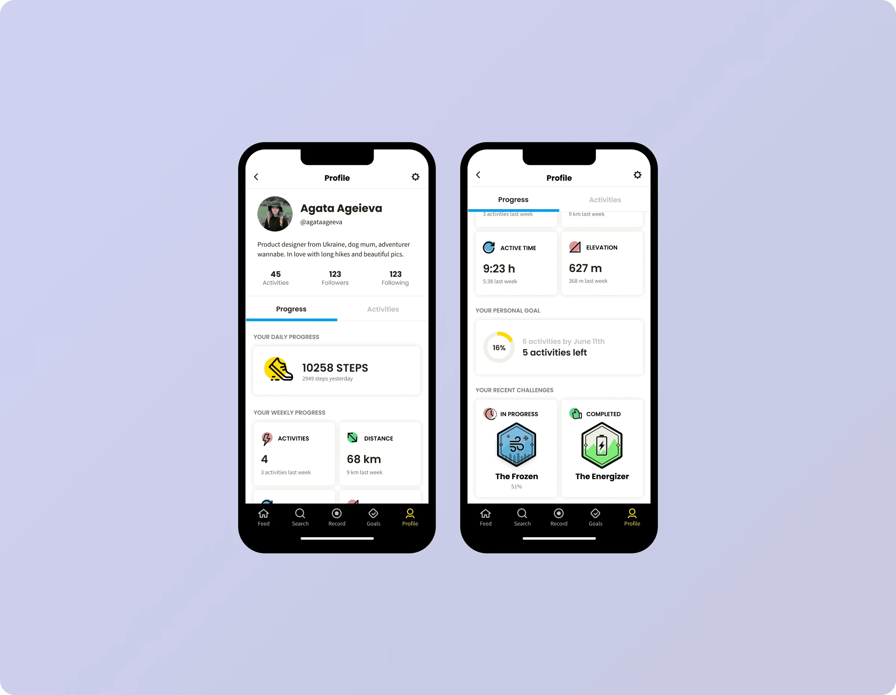
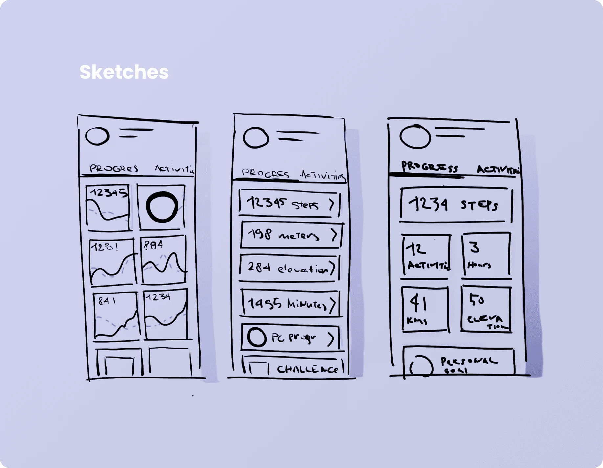
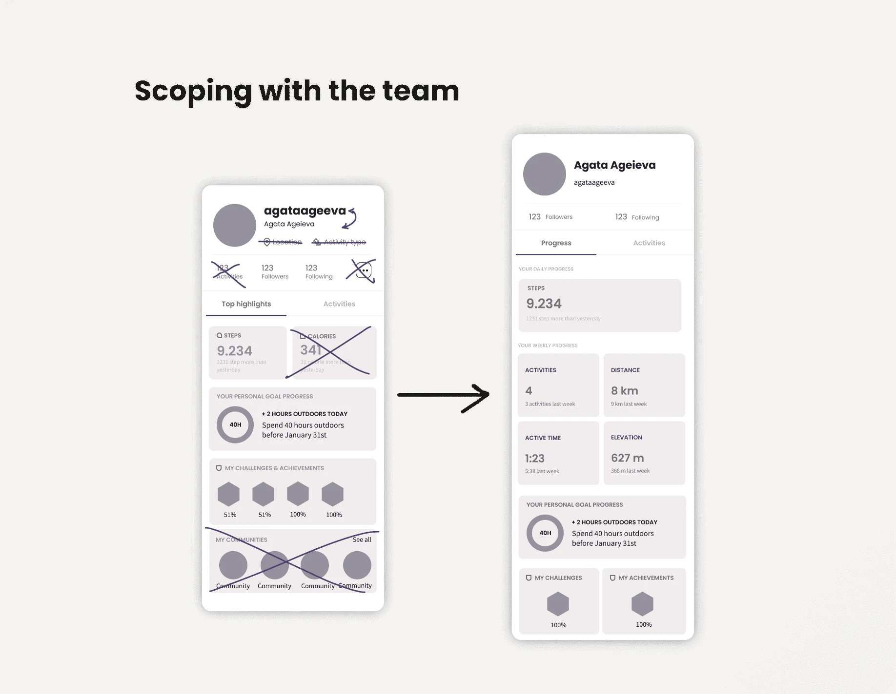
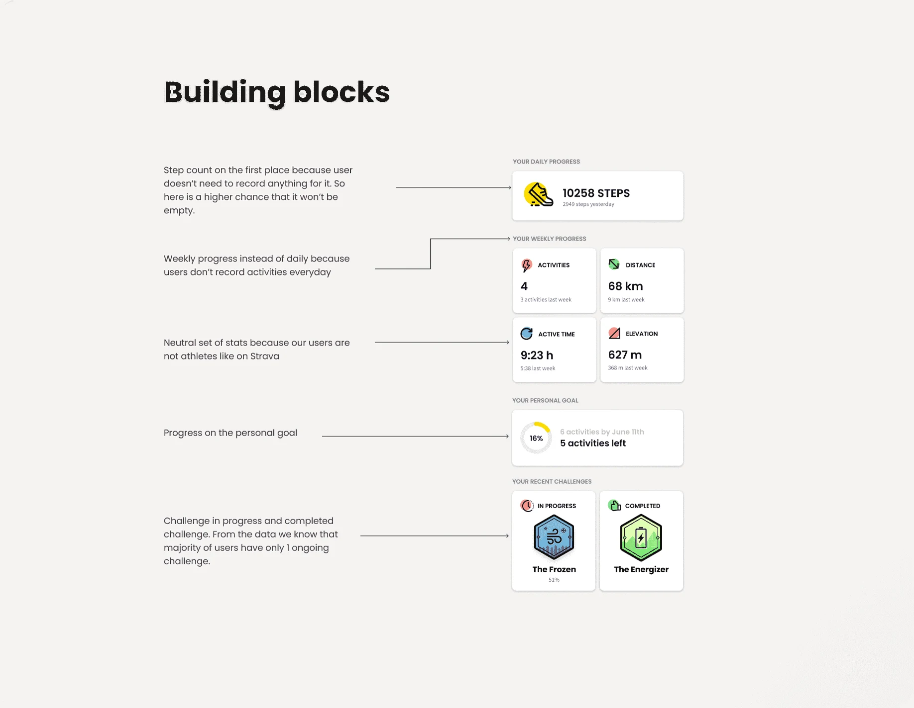

October 2021
Archive
A progress hub on the profile page
The goal was to make it easier for people to track their progress and understand their fitness stats. The new design also simplified the UI and made the stats easier to navigate.

- Discipline
- Product design
- Company
- Relive
- Year
- 2021
- Timeline
- 1 week
01
Problem
Dozens of interviews told us that the only person our users want to compete with is themselves, so Relive wanted to show them how they were doing.
But in a fast-moving company with several product teams chasing their own goals, features end up scattered across the product. Stats were one example. Several pages showed different stats, and several flows showed them again.
02
What I did
I start every project by asking what outcome I'm designing for. With my PM and product analyst, we defined success. It was a low-impact bet, a nice-to-have, so we agreed to keep the change as long as it didn't hurt our safety metrics.
For projects like this I design the 10x experience, then the most minimal one, then settle in the middle. After discussing the sketches, I put together a wireframe for the engineers to scope, and started on the UI based on what fit the time we had.


03
Design
I kept the UI modular. Relive was a startup still figuring things out, so things could be added or removed. And since this wasn't a high-impact page, we wanted any later change to take little time.

04
Impact
We ran the design as an A/B test. It didn't hurt any metric except engagement with people's own activities, which we fixed in the next iteration.
We saw no effect on retention or growth, but people spent more time on the profile's Progress tab, and more of them went deeper into their stats.